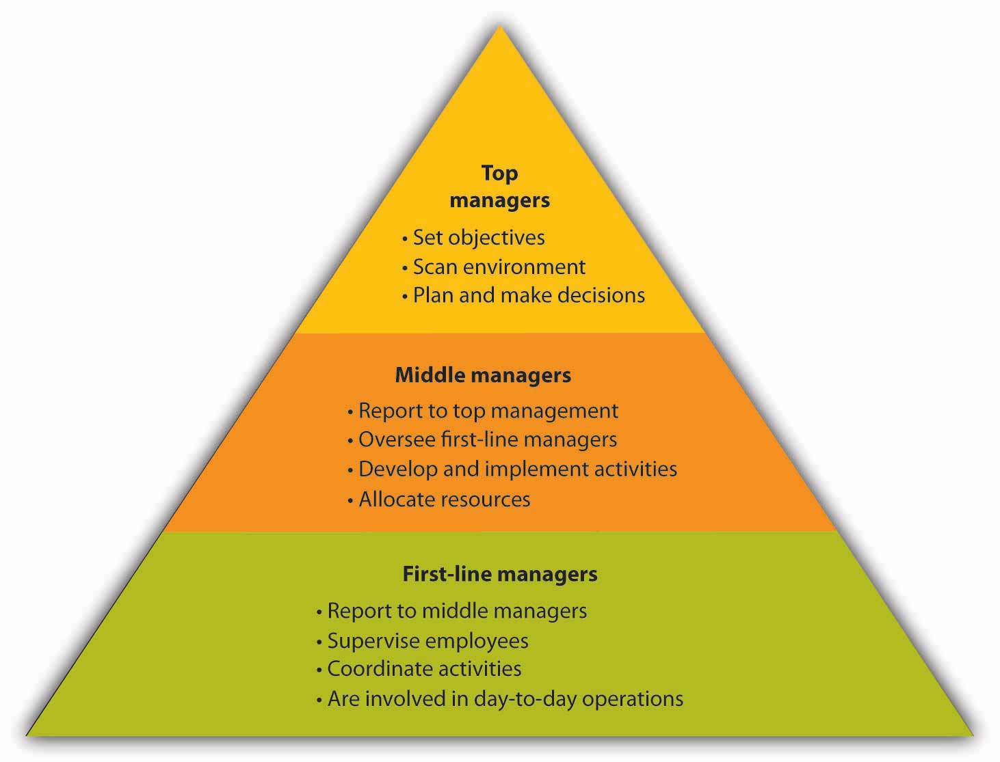
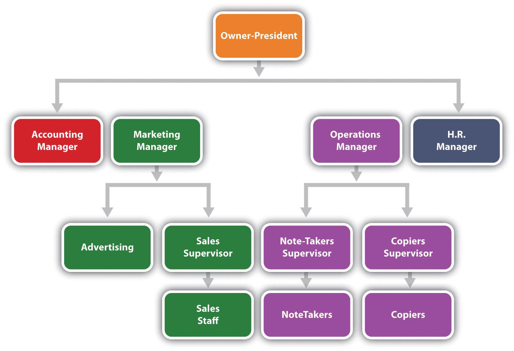
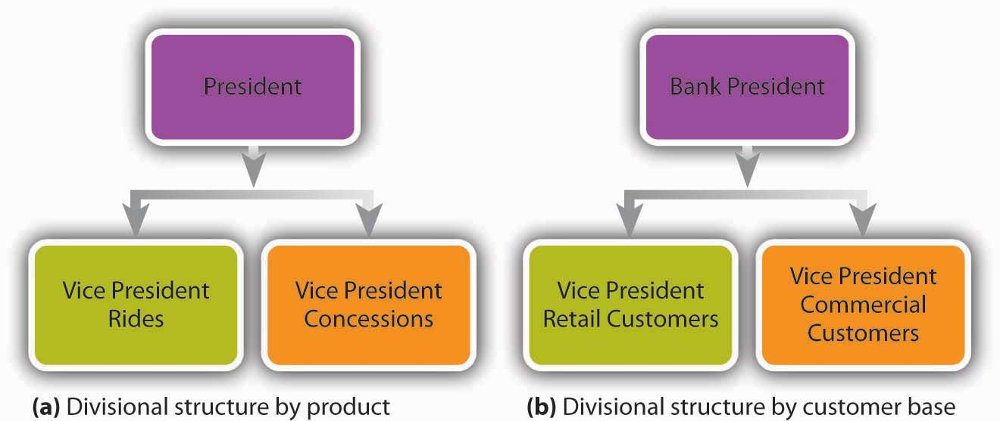
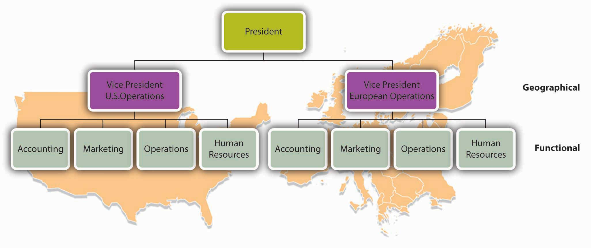
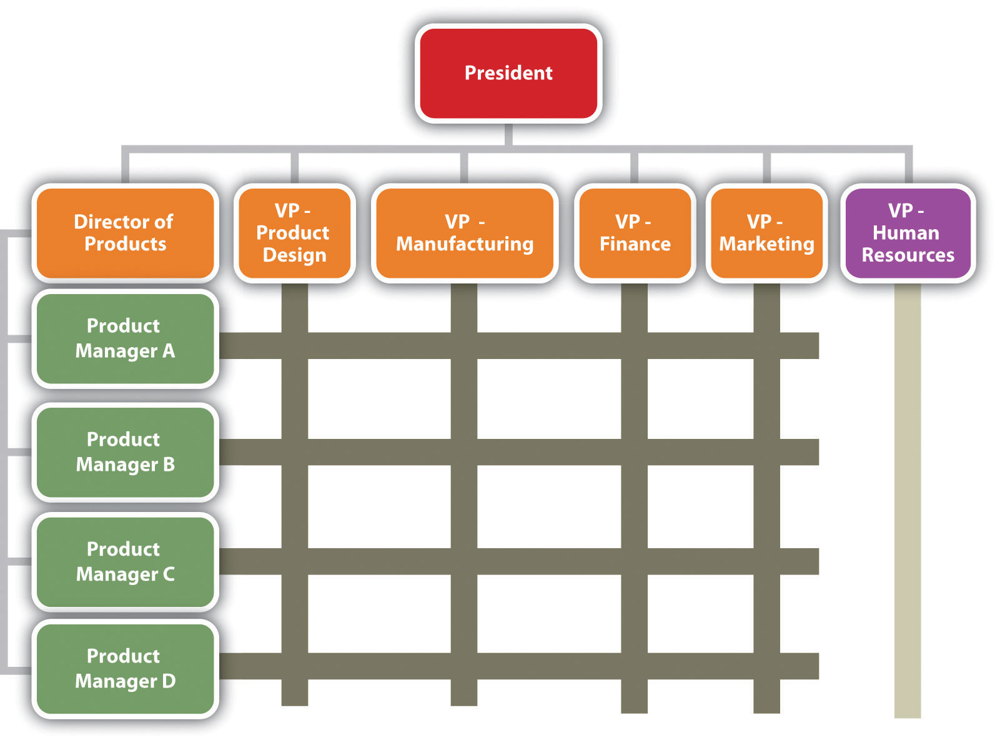

Now that you’ve developed a strategic plan for Notes-4-You, you need to organize your company so that it can implement your plan. A manager engaged in organizingManagement process of allocating resources to achieve a company’s plans. allocates resources (people, equipment, and money) to achieve a company’s plans. Successful managers make sure that all the activities identified in the planning process are assigned to some person, department, or team and that everyone has the resources needed to perform assigned activities.
A typical organization has several layers of management. Think of these layers as forming a pyramid like the one in Figure 6.3 "Levels of Management", with top managers occupying the narrow space at the peak, first-line managers the broad base, and middle-managers the levels in between. As you move up the pyramid, management positions get more demanding, but they carry more authority and responsibility (along with more power, prestige, and pay). Top managers spend most of their time in planning and decision making, while first-line managers focus on day-to-day operations. For obvious reasons, there are far more people with positions at the base of the pyramid than there are with jobs at the other two levels (as you get to the top, there are only a few positions). Let’s look at each management level in more detail.
Figure 6.3 Levels of Management
Top managersThose at the top of the management hierarchy who are responsible for the health and performance of the organization. are responsible for the health and performance of the organization. They set the objectives, or performance targets, designed to direct all the activities that must be performed if the company is going to fulfill its mission. Top-level executives routinely scan the external environment for opportunities and threats, and they redirect company efforts when needed. They spend a considerable portion of their time planning and making major decisions. They represent the company in important dealings with other businesses and government agencies, and they promote it to the public. Job titles at this level typically include chief executive officer (CEO), chief financial officer (CFO), chief operating officer (COO), president, and vice president.
As the name implies, middle managersThose in the middle of the management hierarchy who report to top management and oversee the activities of first-line managers. are in the “middle” of the management hierarchy: They report to top management and oversee the activities of first-line managers. They’re responsible for developing and implementing activities and allocating the resources needed to achieve the objectives set by top management. Common job titles include operations manager, division manager, plant manager, and branch manager.
First-line managersThose at the bottom of the management hierarchy who supervise employees and coordinate their activities. supervise employees and coordinate their activities to make sure that the work performed throughout the company is consistent with the plans of both top and middle management. They’re less involved in planning than higher-level managers and more involved in day-to-day operations. It’s at this level that most people acquire their first managerial experience. The job titles vary considerably but include such designations as department head, group leader, office manager, foreman, and supervisor.
Let’s take a quick survey of the management hierarchy at Notes-4-You. As president, you are, of course, a member of top management, and you’re responsible for the overall performance of your company. You spend much of your time setting objectives, or performance targets, to ensure that the company meets the goals you’ve set for it—increased sales, higher-quality notes, and timely distribution.
Several middle managers report to you, including your operations manager. As a middle manager, this individual focuses on implementing two of your objectives: producing high-quality notes and distributing them to customers in a timely manner. To accomplish this task, the operations manager oversees the work of two first-line managers—the note-taking supervisor and the copying supervisor. Each first-line manager supervises several non-managerial employees to make sure that their work is consistent with the plans devised by top and middle management.
The organizing process raises some important questions: What jobs need to be done? Who does what? Who reports to whom? What are the formal relationships among people in the organization? You provide answers to these questions by developing an organizational structureOrganizational arrangement of jobs in an organization that’s most appropriate for the company at a specific point in time.: an arrangement of positions that’s most appropriate for your company at a specific point in time. Remember, given the rapidly changing environment in which businesses operate, a structure that works today might be outdated tomorrow. That’s why you hear so often about companies restructuringProcess of altering an existing organizational structure to become more competitive under changing conditions.—altering existing organizational structures to become more competitive under conditions that have changed. In building an organizational structure, you engage in two activities: job specialization (dividing tasks into jobs) and departmentalization (grouping jobs into units). We’ll now see how these two processes are accomplished.
The first step in designing an organizational structure is twofold:
This twofold process of organizing activities into clusters of related tasks that can be handled by certain individuals or groups is called specializationProcess of organizing activities into clusters of related tasks that can be handled by specific individuals or groups.. Its purpose is to improve efficiency.
Would specialization make Notes-4-You more efficient? You could have each employee perform all tasks entailed by taking and selling notes. Each employee could take notes in an assigned class, type them up, get them copied, and sell them outside the classroom at the start of the next class meeting. The same person would keep track of all sales and copying costs and give any profit—sales minus copying costs minus compensation—to you. The process seems simple, but is it really efficient? Will you earn the maximum amount of profit? Probably not. Even a company as small as Notes-4-You can benefit from specialization. It would function more efficiently if some employees specialized in taking notes, others in copying and packaging them, and still others in selling them. Higher-level employees could focus on advertising, accounting, finance, and human resources.
Obviously, specialization has advantages. In addition to increasing efficiency, for example, it results in jobs that are easier to learn. But it has disadvantages, too. Doing the same thing over and over bores people and will eventually leave employees dissatisfied with their jobs. Before long, you’ll notice decreased performance and increased absenteeism and turnover.
The next step in designing an organizational structure is departmentalizationProcess of grouping specialized jobs into meaningful units.—grouping specialized jobs into meaningful units. Depending on the organization and the size of the work units, they may be called divisions, departments, or just plain groups. Traditional groupings of jobs result in different organizational structures, and for the sake of simplicity, we’ll focus on two types—functional and divisional organizations.
A functional organizationForm of business organization that groups together people who have comparable skills and perform similar tasks. groups together people who have comparable skills and perform similar tasks. This form of organization is fairly typical for small to medium-size companies, which group their people by business functions: accountants are grouped together, as are people in finance, marketing and sales, human resources, production, and research and development. Each unit is headed by an individual with expertise in the unit’s particular function. The head of an accounting department, for example, will be a senior accountant; the head of a hospital nursing unit will obviously be an experienced nurse. This structure is also appropriate for nonprofits. Think about your school, for instance: mathematics teachers are in the math department, history teachers are in the history department, those who run athletic programs are in the athletic department, and librarians work at the library.
If Notes-4-You adopted a functional approach to departmentalization, jobs might be grouped into four clusters:
There are a number of advantages to the functional approach. The structure is simple to understand and enables the staff to specialize in particular areas; everyone in the marketing group would probably have similar interests and expertise. But homogeneity also has drawbacks: it can hinder communication and decision making between units and even promote interdepartmental conflict. The marketing department, for example, might butt heads with the accounting department because marketers want to spend as much as possible on advertising, while accountants want to control costs. Marketers might feel that accountants are too tight with funds, and accountants might regard marketers as spendthrifts.
Large companies often find it unruly to operate as one large unit under a functional organizational structure. Sheer size makes it difficult for managers to oversee operations and serve customers. To rectify this problem, most large companies are structured as divisional organizationsForm of organization that groups people into several smaller, self-contained units, or divisions, which are accountable for their own performance. made up of several smaller, self-contained units, or divisions, which are accountable for their own performance. Each division functions autonomously because it contains all the functional expertise (production, marketing, accounting, finance, human resources) needed to meet its objectives. The challenge is to find the most appropriate way of structuring operations to achieve overall company goals. Toward this end, divisions can be formed according to products, customers, processes, or geography.
Product divisionOrganizational structure made up of divisions based on product lines. means that a company is structured according to its product lines. General Motors, for example, has four product-based divisions: Buick, Cadillac, Chevrolet, and GMC.Associated Press, “General Motors Rebuilds with 4 Divisions,” The Augusta Chronicle, October 7, 2010, http://chronicle.augusta.com/life/autos/2010-10-07/general-motors-rebuilds-4-divisions (accessed October 8, 2011). Each division has its own research and development group, its own manufacturing operations, and its own marketing team. This allows individuals in the division to focus all their efforts on the products produced by their division. A downside is that it results in higher costs as corporate support services (such as accounting and human resources) are duplicated in each of the four divisions.
Some companies prefer a customer divisionOrganizational structure that groups employees into customer-based business segments. structure because it enables them to better serve their various categories of customers. Thus, Johnson & Johnson’s two hundred or so operating companies are grouped into three customer-based business segments: consumer business (personal-care and hygiene products sold to the general public), pharmaceuticals (prescription drugs sold to pharmacists), and professional business (medical devices and diagnostics products used by physicians, optometrists, hospitals, laboratories, and clinics).Johnson & Johnson Services, “Business Segments,” http://www.jnj.com/connect/about-jnj/company-structure (accessed October 8, 2011).
If goods move through several steps during production, a company might opt for a process divisionOrganizational structure that groups people into operating units based on various stages in the production process. structure. This form works well at Bowater Thunder Bay, a Canadian company that harvests trees and processes wood into newsprint and pulp. The first step in the production process is harvesting and stripping trees. Then, large logs are sold to lumber mills and smaller logs chopped up and sent to Bowater’s mills. At the mill, wood chips are chemically converted into pulp. About 90 percent is sold to other manufacturers (as raw material for home and office products), and the remaining 10 percent is further processed into newspaper print. Bowater, then, has three divisions: tree cutting, chemical processing, and finishing (which makes newsprint).Northwest Forest Industry, Pulp and Paper Manufacturing, “From the Forest to the Office and Home: Bowater—A Case Study in Newsprint and Kraft Pulp Production,” Borealforest.org, http://www.borealforest.org/paper/index.htm (accessed October 8, 2011).
Geographical divisionOrganizational structure that groups people into divisions based on location. enables companies that operate in several locations to be responsive to customers at a local level. McDonald’s, for example, is organized according to the regions of the world in which it operates. In the United States, the national unit is further subdivided into three geographic operating divisions: east, west and central.“Franchising,” McDonald’s Corp., http://www.aboutmcdonalds.com/mcd/franchising/us_franchising/franchise_contacts.html (accessed October 8, 2011). (This approach might be appealing to Notes-4-You if it expands to serve schools around the country.)
There are pluses and minuses associated with divisional organization. On the one hand, divisional structure usually enhances the ability to respond to changes in a firm’s environment. If, on the other hand, services must be duplicated across units, costs will be higher. In addition, some companies have found that units tend to focus on their own needs and goals at the expense of the organization as a whole.
Once an organization has set its structure, it can represent that structure in an organization chartDiagram representing the interrelationships of positions within an organization.: a diagram delineating the interrelationships of positions within the organization. Having decided that Notes-4-You will adopt a functional structure, you might create the organization chart shown in Figure 6.5 "Organization Chart for Notes-4-You".
Figure 6.5 Organization Chart for Notes-4-You
Begin by putting yourself at the top of the chart, as the company’s president. Then fill in the level directly below your name with the names and positions of the people who work directly for you—your accounting, marketing, operations, and human resources managers. The next level identifies the people who work for these managers. Because you’ve started out small, neither your accounting manager nor your human resources manager will be currently managing anyone directly. Your marketing manager, however, will oversee one person in advertising and a sales supervisor (who, in turn, oversees the sales staff). Your operations manager will oversee two individuals—one to supervise notetakers and one to supervise the people responsible for making copies.
With these relationships in mind, you can now draw lines to denote reporting relationshipsPatterns of formal communication among members of an organization., or patterns of formal communication. Because four managers report to you, you’ll be connected to four positions; that is, you’ll have four direct “reports.” Your marketing and operations managers will each be connected to two positions and their supervisors to one position each. The organization chart shows that if a member of the sales staff has a problem, he or she will report it to the sales supervisor. If the sales supervisor believes that the problem should be addressed at a higher level, then he or she will report it to the marketing manager.
Theoretically, you will communicate only with your four direct reports, but this isn’t the way things normally work. Behind every formal communication network there lies a network of informal communications—unofficial relationships among members of an organization. You might find that over time, you receive communications directly from members of the sales staff; in fact, you might encourage this line of communication.
Now let’s look at the chart of an organization that relies on a divisional structure based on goods or services produced—say, a theme park. The top layers of this company’s organization chart might look like the one in Figure 6.6 "Organization Charts for Divisional Structures"(a). We see that the president has two direct reports—a vice president in charge of rides and a vice president in charge of concessions. What about a bank that’s structured according to its customer base? The bank’s organization chart would begin like the one in Figure 6.6 "Organization Charts for Divisional Structures"(b). Once again, the company’s top manager has two direct reports, in this case a VP of retail-customer accounts and a VP of commercial-customer accounts.
Figure 6.6 Organization Charts for Divisional Structures
Over time, companies revise their organizational structures to accommodate growth and changes in the external environment. It’s not uncommon, for example, for a firm to adopt a functional structure in its early years. Then, as it becomes bigger and more complex, it might move to a divisional structure—perhaps to accommodate new products or to become more responsive to certain customers or geographical areas. Some companies might ultimately rely on a combination of functional and divisional structures. This could be a good approach for a credit card company that issues cards in both the United States and Europe. A skeleton of this firm’s organization chart might look like the one in Figure 6.7 "Organization Chart: Combination Divisional and Functional Structures".
Figure 6.7 Organization Chart: Combination Divisional and Functional Structures
You can learn a lot about a firm’s reporting and authority relationships by looking at its organization chart. To whom does a particular person report? Does each person report to one or more supervisors? How many people does a manager supervise? How many layers are there, for example, between the top managerial position and the lowest managerial level?
The vertical connecting lines in the organization chart show the firm’s chain of commandAuthority and reporting relationships among people working at different levels of an organization.: the authority relationships among people working at different levels of the organization. That is to say, they show who reports to whom. When you’re examining an organization chart, you’ll probably want to know whether each person reports to one or more supervisors: to what extent, in other words, is there unity of command? To understand why unity of command is an important organizational feature, think about it from a personal standpoint. Would you want to report to more than one boss? What happens if you get conflicting directions? Whose directions would you follow?
There are, however, conditions under which an organization and its employees can benefit by violating the unity-of-command principle. Under a matrix structureStructure in which employees from various functional areas form teams to combine their skills in working on a specific project., for example, employees from various functional areas (product design, manufacturing, finance, marketing, human resources, etc.) form teams to combine their skills in working on a specific project or product. This matrix organization chart might look like the one in the following figure.
Figure 6.8 Organization Chart: Matrix Structure
Nike sometimes uses this type of arrangement. To design new products, the company may create product teams made up of designers, marketers, and other specialists with expertise in particular sports categories—say, running shoes or basketball shoes. Each team member would be evaluated by both the team manager and the head of his or her functional department.
Another thing to notice about a firm’s chain of command is the number of layers between the top managerial position and the lowest managerial level. As a rule, new organizations (such as Notes-4-You) have only a few layers of management—an organizational structure that’s often called flat. Let’s say, for instance, that a member of the Notes-4-You sales staff wanted to express concern about slow sales among a certain group of students. That person’s message would have to filter upward through only two management layers—the sales supervisor and the marketing manager—before reaching the president.
As a company grows, however, it tends to add more layers between the top and the bottom; that is, it gets taller. Added layers of management can slow down communication and decision making, causing the organization to become less efficient and productive. That’s one reason why many of today’s organizations are restructuring to become flatter.
There are trade-offs between the advantages and disadvantages of flat and tall organizations. Companies determine which trade-offs to make according to a principle called span of controlNumber of people reporting to a particular manager., which measures the number of people reporting to a particular manager. If, for example, you remove layers of management to make your organization flatter, you end up increasing the number of positions reporting to a particular supervisor. If you refer back to the organization chart in Figure 6.5 "Organization Chart for Notes-4-You", you’ll recall that, under your present structure, four managers report to you as the president of Notes-4-You: the heads of accounting, marketing, operations, and human resources. In turn, two of these managers have positions reporting to them: the advertising manager and sales supervisor report to the marketing manager, while the notetaker’s supervisor and the copier’s supervisor report to the operations manager. Let’s say that you remove a layer of management by getting rid of the marketing and operations managers. Your organization would be flatter, but what would happen to your workload? As president, you’d now have six direct reports rather than four: accounting manager, advertising manager, sales manager, notetaker supervisor, copier supervisor, and human resources manager.
What’s better—a narrow span of control (with few direct reports) or a wide span of control (with many direct reports)? The answer to this question depends on a number of factors, including frequency and type of interaction, proximity of subordinates, competence of both supervisor and subordinates, and the nature of the work being supervised. For example, you’d expect a much wider span of control at a nonprofit call center than in a hospital emergency room.
Given the tendency toward flatter organizations and wider spans of control, how do managers handle increased workloads? They must learn how to handle delegationProcess of entrusting work to subordinates.—the process of entrusting work to subordinates. Unfortunately, many managers are reluctant to delegate. As a result, they not only overburden themselves with tasks that could be handled by others, but they also deny subordinates the opportunity to learn and develop new skills.
As owner of Notes-4-You, you’ll probably want to control every aspect of your business, especially during the start-up stage. But as the organization grows, you’ll have to assign responsibility for performing certain tasks to other people. You’ll also have to accept the fact that responsibility alone—the duty to perform a task—won’t be enough to get the job done. You’ll need to grant subordinates the authority they require to complete a task—that is, the power to make the necessary decisions. (And they’ll also need sufficient resources.) Ultimately, you’ll also hold your subordinates accountable for their performance.
If and when your company expands (say, by offering note-taking services at other schools), you’ll have to decide whether most decisions should still be made by individuals at the top or delegated to lower-level employees. The first option, in which most decision making is concentrated at the top, is called centralizationDecision-making process in which most decision making is concentrated at the top.. The second option, which spreads decision making throughout the organization, is called decentralizationDecision-making process in which most decision making is spread throughout the organization..
Let’s say that you favor decentralizing Notes-4-You some four or five years down the road, when the company has expanded. Naturally, there are some decisions—such as strategic planning—that you won’t delegate to lower-level employees, but you could certainly delegate the management of copy-center operations. In fact, putting someone in charge of this function would probably improve customer satisfaction, because copy-center customers would be dealing directly with the manager. It would also give the manager valuable decision-making experience, and while he or she is busy making daily decisions about the copy center, you’ll have more time to work on higher-level tasks. The more you think about the possibility of decentralizing your company, the more you like the idea. First, though, you have to see it through its difficult start-up years.
Define organizational structure and identify five different forms that it can take. For each form, identify a type of company that might use it and explain why it would be appropriate for the company. Use examples other than those mentioned in the chapter.
How would you like to work at the “Sweetest Place on Earth”? Then, consider a career at Hershey Foods, the chocolate and candy maker. Your career path at Hershey Foods might follow a typical path: When you finish college, you may enter the business world as a first-line manager. After about ten years, you will probably have advanced to the middle-management level. Perhaps you’ll keep moving up and eventually find yourself in a top-level management position with a big salary. Examining job opportunities may be an opportunity to start identifying the kinds of positions that interest you. Go to http://www.hersheys.com to link to the Hershey Foods Web site, click on “careers” at the bottom of the home page, and check out available positions. Then, take the following steps: